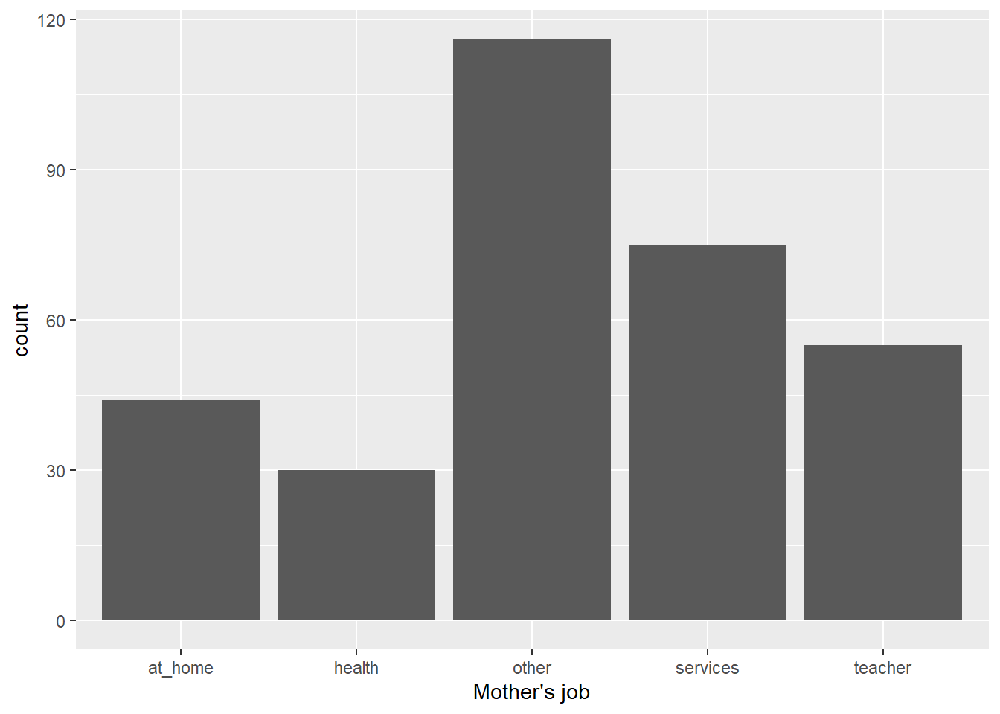
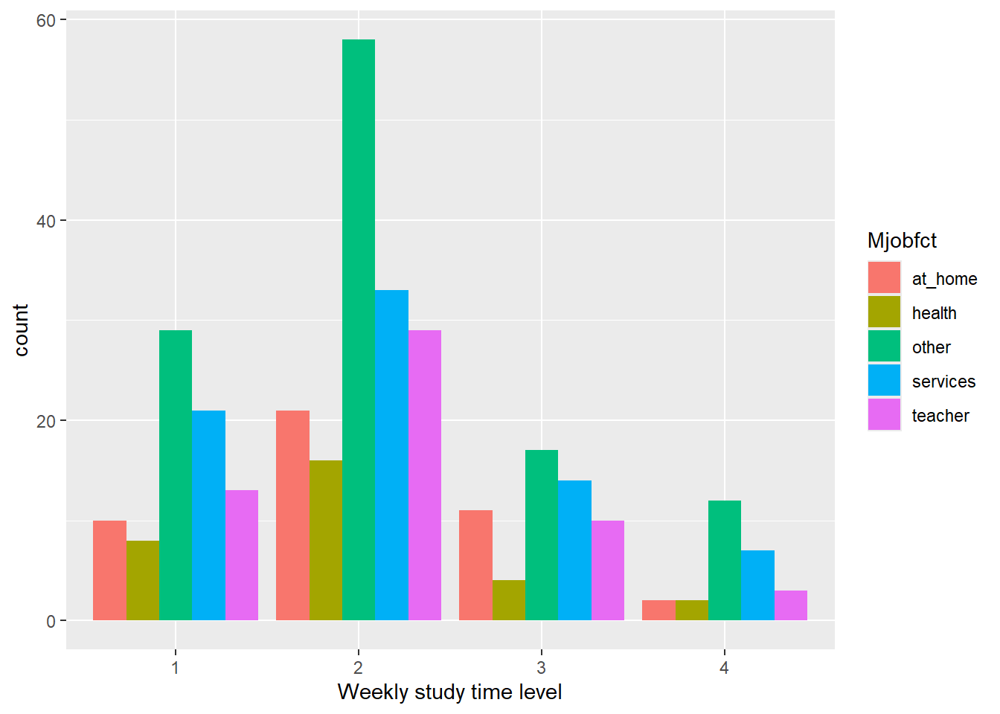
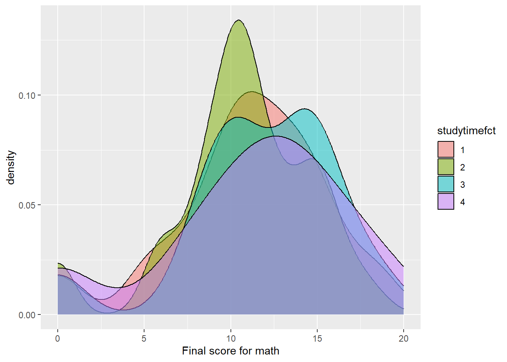
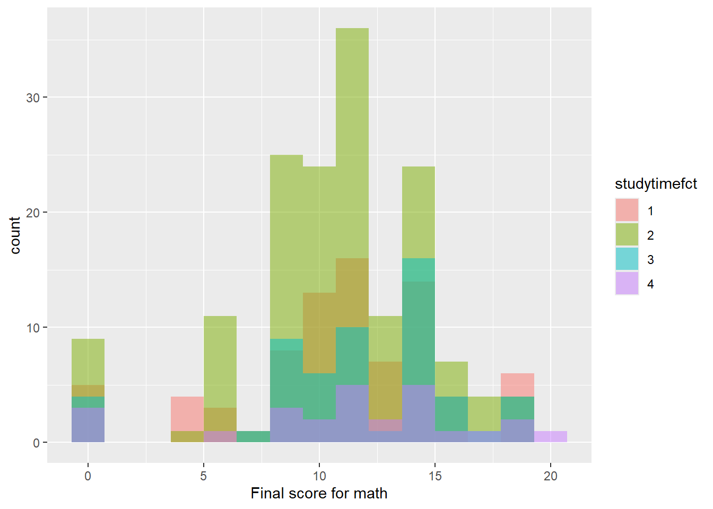
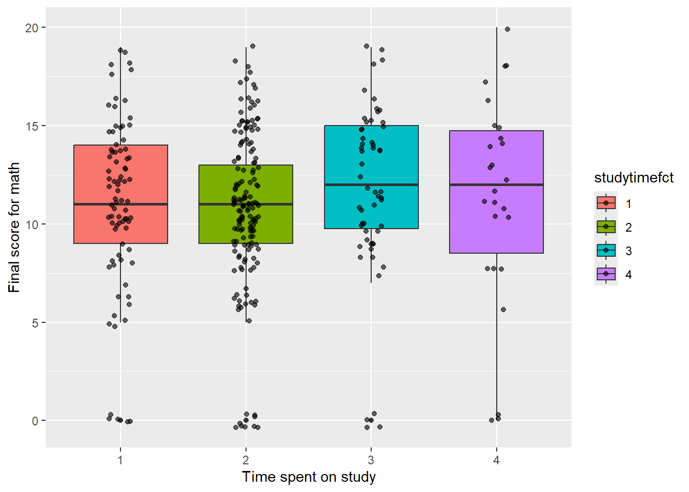
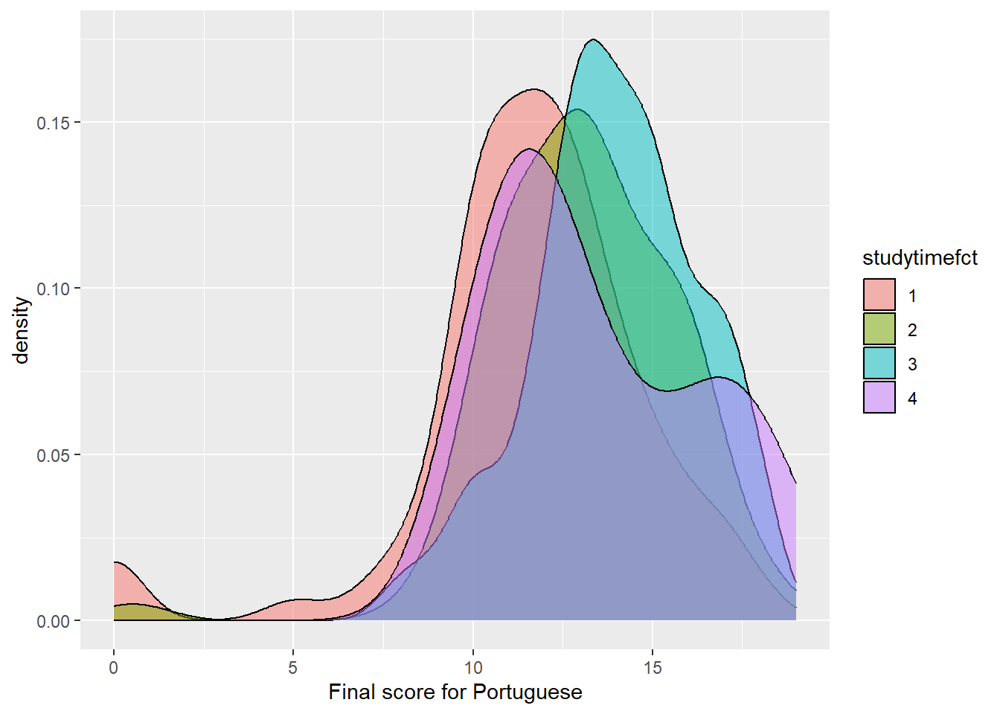
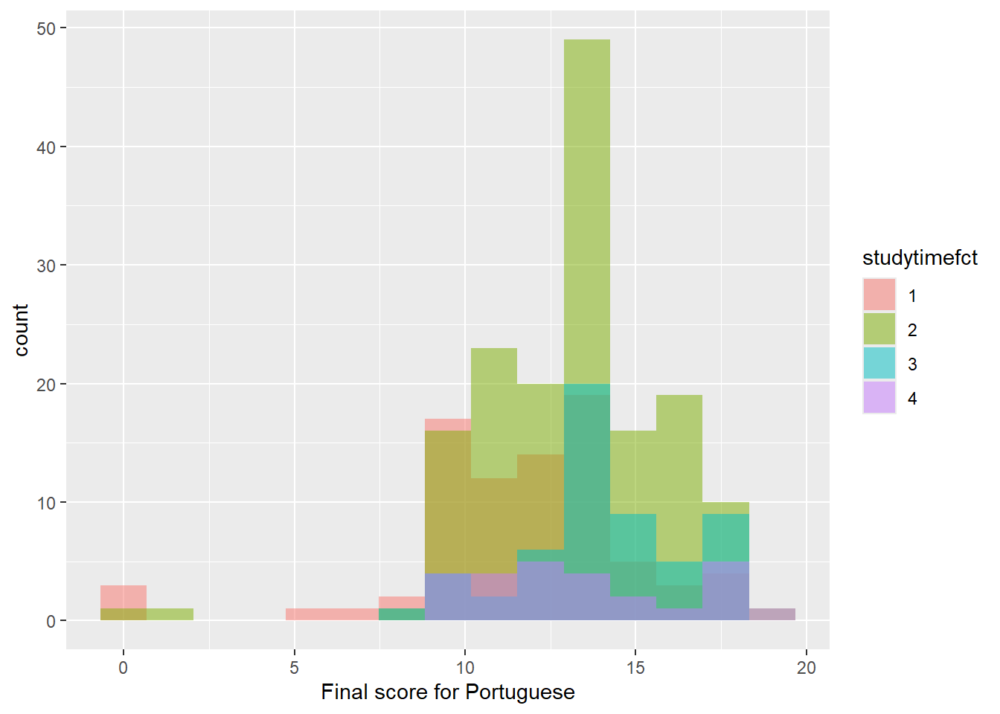
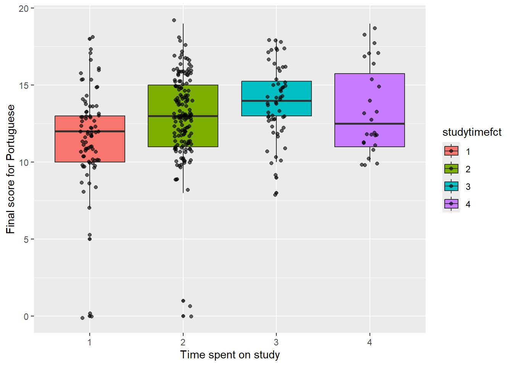
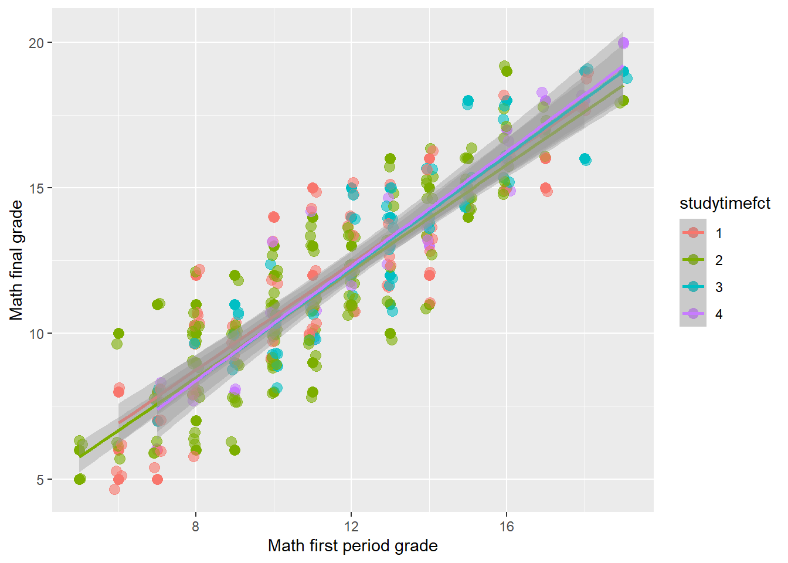
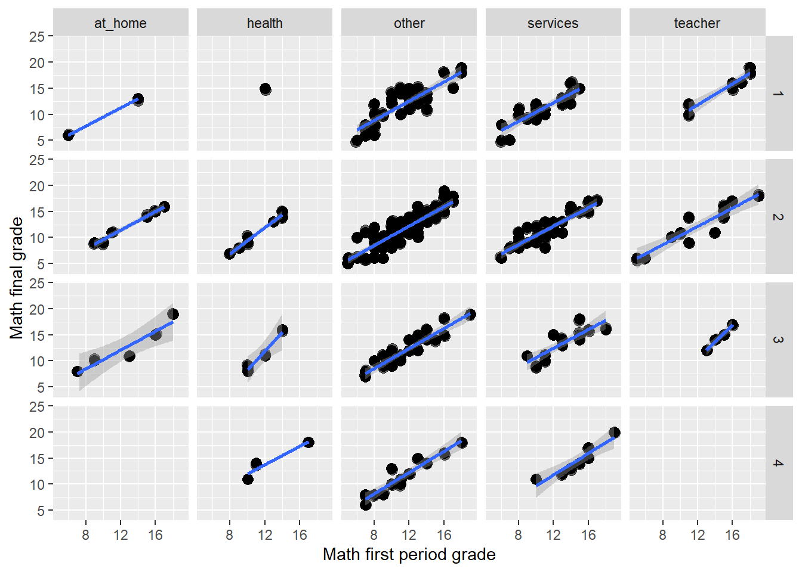

getwd ()[1] "C:/NCSU/Statistics/ST558/2024/ST558_2024_Homework5"This week we are going to work on a student data, basically using exploratory data analysis to analyze the distribution of students’ score and analyze the relationship between students’ score and their home life. The data we are going to use are from the UCI machine learning data repository and is about secondary education in two Portugease schools. I actually searched online for the school name “Gabriel Pereira” and found it is actually in the southern area of Portugal, a city called Evora. This city comes with nice districting, neat road design, with residential and commerical in the center and northern part of the city and large factory in the south and eastern outskirts, and is facilitated by a express ring road. Another school named “Mousinho da Silveira” is seated in the mountain area that boarders Spain. The spread of city itself is linear from north to south and there is even a Castle in the city.
First I am going to import the data after downloading them. In order to read them from local using relative path, I need to confirm my current working directory. I would guess the wd should be them same with the project folder, but let’s see.
getwd ()[1] "C:/NCSU/Statistics/ST558/2024/ST558_2024_Homework5"So I saved the file in the parent folder. I am going to modify the code from the source and load the data in.
library (tidyverse)Warning: package 'ggplot2' was built under R version 4.3.3Warning: package 'tidyr' was built under R version 4.3.3Warning: package 'readr' was built under R version 4.3.3Warning: package 'dplyr' was built under R version 4.3.3Warning: package 'stringr' was built under R version 4.3.3Warning: package 'lubridate' was built under R version 4.3.3── Attaching core tidyverse packages ──────────────────────── tidyverse 2.0.0 ──
✔ dplyr 1.1.4 ✔ readr 2.1.5
✔ forcats 1.0.0 ✔ stringr 1.5.1
✔ ggplot2 3.5.1 ✔ tibble 3.2.1
✔ lubridate 1.9.3 ✔ tidyr 1.3.1
✔ purrr 1.0.2
── Conflicts ────────────────────────────────────────── tidyverse_conflicts() ──
✖ dplyr::filter() masks stats::filter()
✖ dplyr::lag() masks stats::lag()
ℹ Use the conflicted package (<http://conflicted.r-lib.org/>) to force all conflicts to become errorsmat<-read.table("../student/student-mat.csv",sep=";",header=TRUE) |> as.tibble()Warning: `as.tibble()` was deprecated in tibble 2.0.0.
ℹ Please use `as_tibble()` instead.
ℹ The signature and semantics have changed, see `?as_tibble`.por<-read.table("../student/student-por.csv",sep=";",header=TRUE) |> as.tibble()
mat# A tibble: 395 × 33
school sex age address famsize Pstatus Medu Fedu Mjob Fjob reason
<chr> <chr> <int> <chr> <chr> <chr> <int> <int> <chr> <chr> <chr>
1 GP F 18 U GT3 A 4 4 at_home teach… course
2 GP F 17 U GT3 T 1 1 at_home other course
3 GP F 15 U LE3 T 1 1 at_home other other
4 GP F 15 U GT3 T 4 2 health servi… home
5 GP F 16 U GT3 T 3 3 other other home
6 GP M 16 U LE3 T 4 3 services other reput…
7 GP M 16 U LE3 T 2 2 other other home
8 GP F 17 U GT3 A 4 4 other teach… home
9 GP M 15 U LE3 A 3 2 services other home
10 GP M 15 U GT3 T 3 4 other other home
# ℹ 385 more rows
# ℹ 22 more variables: guardian <chr>, traveltime <int>, studytime <int>,
# failures <int>, schoolsup <chr>, famsup <chr>, paid <chr>,
# activities <chr>, nursery <chr>, higher <chr>, internet <chr>,
# romantic <chr>, famrel <int>, freetime <int>, goout <int>, Dalc <int>,
# Walc <int>, health <int>, absences <int>, G1 <int>, G2 <int>, G3 <int>por# A tibble: 649 × 33
school sex age address famsize Pstatus Medu Fedu Mjob Fjob reason
<chr> <chr> <int> <chr> <chr> <chr> <int> <int> <chr> <chr> <chr>
1 GP F 18 U GT3 A 4 4 at_home teach… course
2 GP F 17 U GT3 T 1 1 at_home other course
3 GP F 15 U LE3 T 1 1 at_home other other
4 GP F 15 U GT3 T 4 2 health servi… home
5 GP F 16 U GT3 T 3 3 other other home
6 GP M 16 U LE3 T 4 3 services other reput…
7 GP M 16 U LE3 T 2 2 other other home
8 GP F 17 U GT3 A 4 4 other teach… home
9 GP M 15 U LE3 A 3 2 services other home
10 GP M 15 U GT3 T 3 4 other other home
# ℹ 639 more rows
# ℹ 22 more variables: guardian <chr>, traveltime <int>, studytime <int>,
# failures <int>, schoolsup <chr>, famsup <chr>, paid <chr>,
# activities <chr>, nursery <chr>, higher <chr>, internet <chr>,
# romantic <chr>, famrel <int>, freetime <int>, goout <int>, Dalc <int>,
# Walc <int>, health <int>, absences <int>, G1 <int>, G2 <int>, G3 <int>Next use inner_join () on the variables they used in their code. inner_join () retains the observation if and only if the “key values” are equal. So using inner_join we are essentially filtering out students that studies both math (mat) and Portuguese (por).
matpor <- inner_join(mat, por, by = c ("school","sex","age","address","famsize","Pstatus","Medu","Fedu","Mjob","Fjob","reason","nursery","internet"))Warning in inner_join(mat, por, by = c("school", "sex", "age", "address", : Detected an unexpected many-to-many relationship between `x` and `y`.
ℹ Row 79 of `x` matches multiple rows in `y`.
ℹ Row 79 of `y` matches multiple rows in `x`.
ℹ If a many-to-many relationship is expected, set `relationship =
"many-to-many"` to silence this warning.head (matpor)# A tibble: 6 × 53
school sex age address famsize Pstatus Medu Fedu Mjob Fjob reason
<chr> <chr> <int> <chr> <chr> <chr> <int> <int> <chr> <chr> <chr>
1 GP F 18 U GT3 A 4 4 at_home teacher course
2 GP F 17 U GT3 T 1 1 at_home other course
3 GP F 15 U LE3 T 1 1 at_home other other
4 GP F 15 U GT3 T 4 2 health servic… home
5 GP F 16 U GT3 T 3 3 other other home
6 GP M 16 U LE3 T 4 3 services other reput…
# ℹ 42 more variables: guardian.x <chr>, traveltime.x <int>, studytime.x <int>,
# failures.x <int>, schoolsup.x <chr>, famsup.x <chr>, paid.x <chr>,
# activities.x <chr>, nursery <chr>, higher.x <chr>, internet <chr>,
# romantic.x <chr>, famrel.x <int>, freetime.x <int>, goout.x <int>,
# Dalc.x <int>, Walc.x <int>, health.x <int>, absences.x <int>, G1.x <int>,
# G2.x <int>, G3.x <int>, guardian.y <chr>, traveltime.y <int>,
# studytime.y <int>, failures.y <int>, schoolsup.y <chr>, famsup.y <chr>, …There is a warning:
In inner_join(mat, por, by = c("school", "sex", "age", "address",:
Detected an unexpected many-to-many relationship between `x` and `y`.
Row 79 of `x` matches multiple rows in `y`.
Row 79 of `y` matches multiple rows in `x`.What if we allow the “many-to-many” match?
matpor2 <- inner_join(mat, por, by = c ("school","sex","age","address","famsize","Pstatus","Medu","Fedu","Mjob","Fjob","reason","nursery","internet"), relationship = "many-to-many")
matpor2# A tibble: 382 × 53
school sex age address famsize Pstatus Medu Fedu Mjob Fjob reason
<chr> <chr> <int> <chr> <chr> <chr> <int> <int> <chr> <chr> <chr>
1 GP F 18 U GT3 A 4 4 at_home teach… course
2 GP F 17 U GT3 T 1 1 at_home other course
3 GP F 15 U LE3 T 1 1 at_home other other
4 GP F 15 U GT3 T 4 2 health servi… home
5 GP F 16 U GT3 T 3 3 other other home
6 GP M 16 U LE3 T 4 3 services other reput…
7 GP M 16 U LE3 T 2 2 other other home
8 GP F 17 U GT3 A 4 4 other teach… home
9 GP M 15 U LE3 A 3 2 services other home
10 GP M 15 U GT3 T 3 4 other other home
# ℹ 372 more rows
# ℹ 42 more variables: guardian.x <chr>, traveltime.x <int>, studytime.x <int>,
# failures.x <int>, schoolsup.x <chr>, famsup.x <chr>, paid.x <chr>,
# activities.x <chr>, nursery <chr>, higher.x <chr>, internet <chr>,
# romantic.x <chr>, famrel.x <int>, freetime.x <int>, goout.x <int>,
# Dalc.x <int>, Walc.x <int>, health.x <int>, absences.x <int>, G1.x <int>,
# G2.x <int>, G3.x <int>, guardian.y <chr>, traveltime.y <int>, …We will proceed with this data set based on this method of inner_join. Now make an inner join on the data set from two schools on all variables other than G1, G2, G3, paid, and absence.
matpor3 <- inner_join(mat, por, by = c ("school","sex","age","address","famsize","Pstatus","Medu","Fedu","Mjob","Fjob","reason","guardian","traveltime","studytime","failures","schoolsup","famsup","activities","nursery","higher","internet","romantic","famrel","goout","Dalc","Walc","health"),relationship = "many-to-many")
matpor3# A tibble: 320 × 39
school sex age address famsize Pstatus Medu Fedu Mjob Fjob reason
<chr> <chr> <int> <chr> <chr> <chr> <int> <int> <chr> <chr> <chr>
1 GP F 18 U GT3 A 4 4 at_home teach… course
2 GP F 17 U GT3 T 1 1 at_home other course
3 GP F 15 U GT3 T 4 2 health servi… home
4 GP F 16 U GT3 T 3 3 other other home
5 GP M 16 U LE3 T 4 3 services other reput…
6 GP M 16 U LE3 T 2 2 other other home
7 GP F 17 U GT3 A 4 4 other teach… home
8 GP M 15 U LE3 A 3 2 services other home
9 GP M 15 U GT3 T 3 4 other other home
10 GP F 15 U GT3 T 4 4 teacher health reput…
# ℹ 310 more rows
# ℹ 28 more variables: guardian <chr>, traveltime <int>, studytime <int>,
# failures <int>, schoolsup <chr>, famsup <chr>, paid.x <chr>,
# activities <chr>, nursery <chr>, higher <chr>, internet <chr>,
# romantic <chr>, famrel <int>, freetime.x <int>, goout <int>, Dalc <int>,
# Walc <int>, health <int>, absences.x <int>, G1.x <int>, G2.x <int>,
# G3.x <int>, paid.y <chr>, freetime.y <int>, absences.y <int>, G1.y <int>, …From the txt file that comes with the data set we know that the data set “mat” is associated with math score and the data set “por” is associated with Portuguese score. We choose four categorical variables and convert them into factor variables in each tibble. I am interested in school, mother’s job, father’s job and study time.
mat2 <- mat |> mutate (schoolfct = as.factor (school),
Mjobfct = as.factor (Mjob),
Fjobfct = as.factor (Fjob),
studytimefct = as.factor (studytime)) |> select (-school, -Mjob, -Fjob, -studytime)
por2 <- por |> mutate (schoolfct = as.factor (school),
Mjobfct = as.factor (Mjob),
Fjobfct = as.factor (Fjob),
studytimefct = as.factor (studytime)) |> select (-school, -Mjob, -Fjob, -studytime)
matpor4 <- matpor3 |> mutate (schoolfct = as.factor (school),
Mjobfct = as.factor (Mjob),
Fjobfct = as.factor (Fjob),
studytimefct = as.factor (studytime)) |> select (-school, -Mjob, -Fjob, -studytime)
str(mat2 [,30:33])tibble [395 × 4] (S3: tbl_df/tbl/data.frame)
$ schoolfct : Factor w/ 2 levels "GP","MS": 1 1 1 1 1 1 1 1 1 1 ...
$ Mjobfct : Factor w/ 5 levels "at_home","health",..: 1 1 1 2 3 4 3 3 4 3 ...
$ Fjobfct : Factor w/ 5 levels "at_home","health",..: 5 3 3 4 3 3 3 5 3 3 ...
$ studytimefct: Factor w/ 4 levels "1","2","3","4": 2 2 2 3 2 2 2 2 2 2 ...str (por2 [,30:33])tibble [649 × 4] (S3: tbl_df/tbl/data.frame)
$ schoolfct : Factor w/ 2 levels "GP","MS": 1 1 1 1 1 1 1 1 1 1 ...
$ Mjobfct : Factor w/ 5 levels "at_home","health",..: 1 1 1 2 3 4 3 3 4 3 ...
$ Fjobfct : Factor w/ 5 levels "at_home","health",..: 5 3 3 4 3 3 3 5 3 3 ...
$ studytimefct: Factor w/ 4 levels "1","2","3","4": 2 2 2 3 2 2 2 2 2 2 ...str (matpor4 [,36:39])tibble [320 × 4] (S3: tbl_df/tbl/data.frame)
$ schoolfct : Factor w/ 2 levels "GP","MS": 1 1 1 1 1 1 1 1 1 1 ...
$ Mjobfct : Factor w/ 5 levels "at_home","health",..: 1 1 2 3 4 3 3 4 3 5 ...
$ Fjobfct : Factor w/ 5 levels "at_home","health",..: 5 3 4 3 3 3 5 3 3 2 ...
$ studytimefct: Factor w/ 4 levels "1","2","3","4": 2 2 3 2 2 2 2 2 2 2 ...Now we saw the new tibbles are with the four character variables transformed into factor variables.
BaseR has a good function to generate contigency table called table(). We will first use this function to generate a one-way, a two-way and a three-way contingency table.
table(matpor4$schoolfct)
GP MS
287 33 This one-way contingency table showed basically the number of students from each school in the combined data set. For example, there are 287 students in the GP high school.
table (matpor4$Mjobfct, matpor4$studytimefct)
1 2 3 4
at_home 10 21 11 2
health 8 16 4 2
other 29 58 17 12
services 21 33 14 7
teacher 13 29 10 3This two-way contingency table showed the students’ weekly study time and their mom’s job. For example, it showed there are 7 students whose moms work as civic servants had weekly study time more than 10 hours.
table (matpor4$Mjobfct, matpor4$studytimefct, matpor4$Fjobfct), , = at_home
1 2 3 4
at_home 1 2 3 0
health 0 0 0 0
other 0 2 2 0
services 0 1 1 0
teacher 1 1 0 0
, , = health
1 2 3 4
at_home 0 1 0 0
health 1 2 1 1
other 0 1 0 1
services 0 0 2 1
teacher 0 3 1 0
, , = other
1 2 3 4
at_home 7 10 4 2
health 5 9 1 0
other 21 44 13 9
services 8 16 5 2
teacher 4 14 2 1
, , = services
1 2 3 4
at_home 2 6 4 0
health 2 4 2 1
other 6 8 1 2
services 11 14 4 4
teacher 3 5 6 2
, , = teacher
1 2 3 4
at_home 0 2 0 0
health 0 1 0 0
other 2 3 1 0
services 2 2 2 0
teacher 5 6 1 0In addition, this three-way contingency table showed the weekly study time and their mom’s job, on the condition of their father’s job. You could see there are 4 students whose both parents work as civic servants study more than 10 hours a week.
Next we will create a conditional two-way table using filter () function and subsetting separately.
matpor4subset <- matpor4|> filter (Fjobfct == "health")
table (matpor4subset$Mjobfct, matpor4subset$studytimefct)
1 2 3 4
at_home 0 1 0 0
health 1 2 1 1
other 0 1 0 1
services 0 0 2 1
teacher 0 3 1 0Above is the filter data method
jbsttmtable <- table (matpor4$Mjobfct, matpor4$studytimefct, matpor4$Fjobfct)
jbsttmtable[,,2]
1 2 3 4
at_home 0 1 0 0
health 1 2 1 1
other 0 1 0 1
services 0 0 2 1
teacher 0 3 1 0The above is the subsetting method.
Next we create a two-way contingency table using group_by() and summarize(). For example we could do school and study time.
matpor4 |> group_by(schoolfct, studytimefct) |> summarize (count = n())`summarise()` has grouped output by 'schoolfct'. You can override using the
`.groups` argument.# A tibble: 7 × 3
# Groups: schoolfct [2]
schoolfct studytimefct count
<fct> <fct> <int>
1 GP 1 69
2 GP 2 143
3 GP 3 49
4 GP 4 26
5 MS 1 12
6 MS 2 14
7 MS 3 7We could use the function pivot_wider() to transform the table into a table()-style like output.
matpor4 |> group_by(schoolfct, studytimefct) |> summarize (count = n()) |> pivot_wider(names_from = schoolfct, values_from = count)`summarise()` has grouped output by 'schoolfct'. You can override using the
`.groups` argument.# A tibble: 4 × 3
studytimefct GP MS
<fct> <int> <int>
1 1 69 12
2 2 143 14
3 3 49 7
4 4 26 NALastly we will create a bar graph showed the number of students with different mothers’ job.
ggplot (data = matpor4, aes (x = Mjobfct)) +
geom_bar() +
labs (x="Mother's job")
We then create a side-by-side bar graph showing the number of students with different study time and mother’s job.
ggplot (data = matpor4, aes (x = studytimefct, fill = Mjobfct)) +
geom_bar(position = "dodge") +
labs (x="Weekly study time level")
First we want to find the center and spread to characterize the numeric variable in the combined data set: age, absence and G3. Need to remember for the combined data set, there are two variable for G3, one for math, another one for Portuguese.
numericsummary <- matpor4 |>
rename (absences_mat = absences.x, absences.por = absences.y, G3_mat = G3.x, G3_por = G3.y) |>
summarize (across (c(age, absences_mat, G3_mat), .fns = list ("mean" = mean, "median" = median, "var" = var, "sd" = sd, "IQR" = IQR),
.names = "{.fn}_{.col}"))We could subset the data only to show the stats related with the variable “age”, “absences_mat”, “G3_mat”
numericsummary [1:5]# A tibble: 1 × 5
mean_age median_age var_age sd_age IQR_age
<dbl> <dbl> <dbl> <dbl> <dbl>
1 16.5 16 1.30 1.14 1numericsummary [6:10]# A tibble: 1 × 5
mean_absences_mat median_absences_mat var_absences_mat sd_absences_mat
<dbl> <dbl> <dbl> <dbl>
1 5.41 4 61.4 7.84
# ℹ 1 more variable: IQR_absences_mat <dbl>numericsummary [11:15]# A tibble: 1 × 5
mean_G3_mat median_G3_mat var_G3_mat sd_G3_mat IQR_G3_mat
<dbl> <dbl> <dbl> <dbl> <dbl>
1 11.0 11 18.5 4.30 5It is better if we summarize the statistics of numeric variables according to different groups of sample students. We could grouping the numeric variables according to their Father’s job.
numericsummarygroup <- matpor4 |>
rename (absences_mat = absences.x, absences.por = absences.y, G3_mat = G3.x, G3_por = G3.y) |>
group_by(Fjobfct) |>
drop_na (Fjobfct) |>
summarize (across (c(age, absences_mat, G3_mat), .fns = list ("mean" = mean, "median" = median), names = "{.fn}_{.col}"))Warning: There was 1 warning in `summarize()`.
ℹ In argument: `across(...)`.
ℹ In group 1: `Fjobfct = at_home`.
Caused by warning:
! The `...` argument of `across()` is deprecated as of dplyr 1.1.0.
Supply arguments directly to `.fns` through an anonymous function instead.
# Previously
across(a:b, mean, na.rm = TRUE)
# Now
across(a:b, \(x) mean(x, na.rm = TRUE))numericsummarygroup# A tibble: 5 × 7
Fjobfct age_mean age_median absences_mat_mean absences_mat_median G3_mat_mean
<fct> <dbl> <dbl> <dbl> <dbl> <dbl>
1 at_home 16.6 17 4 2 11.1
2 health 15.8 16 4.47 2 11.9
3 other 16.6 17 5.59 4 10.7
4 services 16.6 17 5.48 2 11.2
5 teacher 16.5 16 5.30 4 12.6
# ℹ 1 more variable: G3_mat_median <dbl>From the table we could tell students whose fathers are teachers have a higher mean value for math score, and at home dads tend to have kids with less absence for math class. Now we would like to add another grouping factor: school.
numericsummarygroup <- matpor4 |>
rename (absences_mat = absences.x, absences.por = absences.y, G3_mat = G3.x, G3_por = G3.y) |>
group_by(Fjobfct, schoolfct) |>
drop_na (Fjobfct, schoolfct) |>
summarize (across (c(age, absences_mat, G3_mat), .fns = list ("mean" = mean, "median" = median), names = "{.fn}_{.col}"))`summarise()` has grouped output by 'Fjobfct'. You can override using the
`.groups` argument.numericsummarygroup# A tibble: 9 × 8
# Groups: Fjobfct [5]
Fjobfct schoolfct age_mean age_median absences_mat_mean absences_mat_median
<fct> <fct> <dbl> <dbl> <dbl> <dbl>
1 at_home GP 16.5 16 3.73 2
2 at_home MS 17.3 17 5 7
3 health GP 15.8 16 4.47 2
4 other GP 16.5 16 5.64 4
5 other MS 17.9 18 4.92 2
6 services GP 16.3 16 6.35 2
7 services MS 17.7 18 1.33 0
8 teacher GP 16.4 16 5.16 4
9 teacher MS 18 18 7 7
# ℹ 2 more variables: G3_mat_mean <dbl>, G3_mat_median <dbl>In general students tend to have lower math score and higher absences at MS high compared with GP high for math. However, if the students have teacher fathers then there is minimal differences in their average math score, although median math score is lower at MS high. Now that we could create a correlation matrix for all the numeric variables, including age, absences, G1/G2/G3 for math and Portuguese.
matpor4rename <- matpor4 |>
rename (absences_mat = absences.x, absences_por = absences.y,
G3_mat = G3.x, G3_por = G3.y, G1_mat = G1.x, G1_por = G1.y, G2_mat = G2.x, G2_por = G2.y)
matpor4rename |> select (age, absences_mat, absences_por, G1_mat, G1_por, G2_mat, G2_por, G3_mat, G3_por) |>
cor (method = "pearson") |> round (2) age absences_mat absences_por G1_mat G1_por G2_mat G2_por G3_mat
age 1.00 0.14 0.05 -0.11 -0.05 -0.19 0.03 -0.21
absences_mat 0.14 1.00 0.56 -0.07 -0.09 -0.08 -0.15 -0.03
absences_por 0.05 0.56 1.00 -0.09 -0.10 -0.13 -0.12 -0.12
G1_mat -0.11 -0.07 -0.09 1.00 0.59 0.87 0.60 0.82
G1_por -0.05 -0.09 -0.10 0.59 1.00 0.54 0.88 0.52
G2_mat -0.19 -0.08 -0.13 0.87 0.54 1.00 0.57 0.91
G2_por 0.03 -0.15 -0.12 0.60 0.88 0.57 1.00 0.55
G3_mat -0.21 -0.03 -0.12 0.82 0.52 0.91 0.55 1.00
G3_por -0.01 -0.14 -0.07 0.54 0.83 0.50 0.89 0.48
G3_por
age -0.01
absences_mat -0.14
absences_por -0.07
G1_mat 0.54
G1_por 0.83
G2_mat 0.50
G2_por 0.89
G3_mat 0.48
G3_por 1.00In the correlation coefficient table, we could see the absences between the two classes are highly correlated, and absences are generally negatively correlated with scores. Regarding testing score, they are very highly correlated, even in different subjects. Probably the students who had higher score in one subject tend to not have a lower score in another subject as well. It would be interested to see how other variables contribute to the score of the two subjects as well. Next we will illustrate how different values of categorical variables affect the distribution of numeric variables. Specifically in this data set, we will be looking at how weekly study time affect the distribution of final score and math and Portuguese, using kernel density plot, histogram and box plot.
First let’s plot a kernel density plot and a histogram
ggplot (matpor4rename, aes (x = G3_mat, fill = studytimefct)) +
geom_density (alpha = 0.5) +
xlab ("Final score for math")
ggplot (matpor4rename, aes (x = G3_mat, fill = studytimefct)) +
geom_histogram (alpha = 0.5, position = "identity", bins = 15)+
xlab ("Final score for math")
Because there are very different number of students in each group of study time, so clearly density plot is a better choice. The data suggested the majority of students studying 2-5 hours weekly had a slightly lower score at Math. Here we plot the blox plot.
ggplot (matpor4rename, (aes (x = studytimefct, y = G3_mat, fill = studytimefct))) +
geom_boxplot() +
geom_jitter(width = 0.1, alpha = 0.6) +
xlab ("Time spent on study") +
ylab ("Final score for math")
Following the same method, we could make plots for the Portuguese score.
ggplot (matpor4rename, aes (x = G3_por, fill = studytimefct)) +
geom_density (alpha = 0.5) +
xlab ("Final score for Portuguese")
ggplot (matpor4rename, aes (x = G3_por, fill = studytimefct)) +
geom_histogram (alpha = 0.5, position = "identity", bins = 15)+
xlab ("Final score for Portuguese")
ggplot (matpor4rename, (aes (x = studytimefct, y = G3_por, fill = studytimefct))) +
geom_boxplot() +
geom_jitter(width = 0.1, alpha = 0.6) +
xlab ("Time spent on study") +
ylab ("Final score for Portuguese")
It is clearly from the kernel density plot and the box plot that students who study 5-10 hours weekly had the highest score for Portuguese, although there seemed to be a single person who study more than 10 hours a week scored really high on Portuguese.
We further explore the relationship between the 1st period grade and the final grade on math, with different levels of study time per week.
g <- ggplot (matpor4rename, aes (x = G1_mat, y = G3_mat, color = studytimefct)) +
geom_point(size = 3) +
geom_jitter(width = 0.1, alpha = 0.6, size = 3) +
xlab ("Math first period grade") +
ylab ("Math final grade")There are a bunch of students who got zero for the final grade. Probably that is due to no show up. When exploring relations, better remove those points. In addition, there seemed to be strong relationship in each group of study time. We could add a trend line on this.
matpor4rename1 <- matpor4rename |> filter (G3_mat > 0)
g1 <- matpor4rename1 |> ggplot (aes (x = G1_mat, y = G3_mat, color = studytimefct)) +
geom_point(size = 3) +
geom_jitter(width = 0.1, alpha = 0.6, size = 3) +
xlab ("Math first period grade") +
ylab ("Math final grade")+
geom_smooth(method = lm)
g1`geom_smooth()` using formula = 'y ~ x'
From this plot we could see the correlation between the 1st and the final math score is not changed solely by the time students spent on studying. Then how about different career choices by their fathers?
g2 <- matpor4rename1 |> ggplot (aes (x = G1_mat, y = G3_mat)) +
geom_point(size = 3) +
geom_jitter(width = 0.1, alpha = 0.6, size = 3) +
xlab ("Math first period grade") +
ylab ("Math final grade")+
geom_smooth(method = lm)
g2 + facet_wrap (~Fjobfct)`geom_smooth()` using formula = 'y ~ x'
So the correlation between 1st and final math score is pretty strong, but having a father working in the health industry seemed to be more likely to improve your math results. Now we would like to see the effect of each combination of the two categorical variables on the relationship of 1st vs final Math test.
g2 + facet_grid(studytimefct ~ Fjobfct) +
ylim (c(4,24))`geom_smooth()` using formula = 'y ~ x'Warning in qt((1 - level)/2, df): NaNs producedWarning in max(ids, na.rm = TRUE): no non-missing arguments to max; returning
-Inf
Warning in max(ids, na.rm = TRUE): no non-missing arguments to max; returning
-Inf
This visualization offers a broader view of both factors on score improvement. First, it looks like the length of study per week affect the 1st test score of math, espeically when the dad works for the public sector. Probably that reflects the students’ study habits. Second it looks like studying for 5-10 hours per week might results in better improvement of score, especially if you have a health worker dad or a teacher dad. All in all, it is an excellent data set to explore the students’ performance with their family conditions.